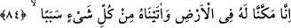

haber okuyacağım. Okuma işini asla terk etmeyeceğim.
84. Gerçekten biz onu yeryüzünde iktidar ve kudret sahibi kıldık, ona (muhtaç
olduğu) her şey için bir sebep (bir vâsıta ve yol) verdik.
Bu âyette önceki âyette vaad edildiği üzere bahsedilen hatıranın okunmasına
başlanmaktadır. “Gerçekten biz onu yeryüzünde iktidar ve kudret sahibi kıldık.”
Temkin (yerleştirmek) güçlü kılmak, sebeplerini hazırlamak demektir. İlkine göre mânâ:
“Onu güçlü ve muktedir kıldık”, ikincisine göre ise: “Onun için kuvvet ve kudret takdir
ettik.” şeklindedir. Varlıkta biri diğerini gerektirdiği, mânâları da birbirine yakın olduğu
için her biri diğerinin yerine kullanılmıştır. Nitekim Allah Teâlâ şöyle buyurur:
“Yeryüzünde size vermediğimiz imkanları onlara verdik.” (el-En‘âm, 6/6) Yâni
onları yeryüzünde çeşitli imkan ve tasarruflar konusunda kuvvet, sebep ve âletler
yönünden güçlü kıldık. Size ise mal, sayı ve sebepler bakımından üstünlük konusunda o
kuvvet ve genişliği vermedik. Sanki şöyle denilmiştir: “Sizin için kılmadığımız imkânı,
yeryüzünde onlar için kıldık.” Ya da cümlenin mânâsı şudur: “Biz ona tedbir ve rey
yönünden tasarrufa güç ve kudret verdik. Çünkü bulutlar onun emrine verildi. Onun için
sebepler arttırıldı, nur onun için yayıldı, gece ve gündüz onun için eşit oldu. Yeryüzünde
seyr ve sefer ona kolaylaştırıldı, yollar ona boyun eğdi.
İbn Abbas (r.anhümâ)’dan şöyle rivâyet edilmiştir: “İbrahim (a.s.) Mekke’de
bulunduğu sırada Zülkarneyn (a.s.) o tarafa yönelmişti. Ebtah denilen yere varınca ona:
“Orada İbrahim Halîlurrahman bulunuyor.” denildi. Zülkarneyn (a.s.) hayvanından indi,
İbrahim (a.s.)’a doğru yürüyerek gitti. Varınca selam verdi ve ona sarıldı.
Selamlaşırken ilk kucaklaşan Zülkarneyn (a.s.)’dır. Nitekim İnsânu’l-uyûn ve Düreru’l-
gurer’de böyle geçmektedir. İşte o zaman bulutlar onun emrine verilmişti. Çünkü tevazu
edeni Allah yükseltir. Bir kavme gazâya çıktığında bulut onu, askerlerini ve bütün
levâzımâtını taşırdı. Karanlık ve nur ona musahhar kılınmıştı. Gece yürüdüğünde nur
ona yol gösterir, arka tarafını karanlık kuşatırdı.
Hak sana Cebrail’in sıfatlarını ihsan ederse,
Kuş yavrusu gibi havalarda kanat çırpar, yol ararsın!
Hak sana eşeklik sıfatları verirse,
Yüz kanadın bile olsa, gelir, ahıra konarsın!
Gönül gözü ilâhî nûra mahrem olunca
Kevn ve mekan senden uzak olur
Kim bu cihanda kör olursa
Şüphesiz onun gündüz ve gecesi bir olur